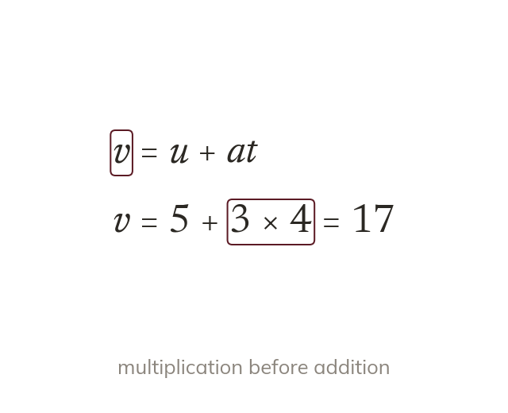
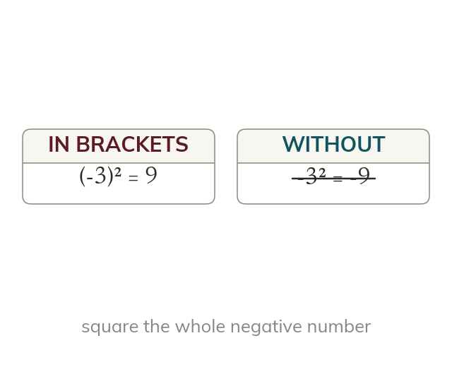
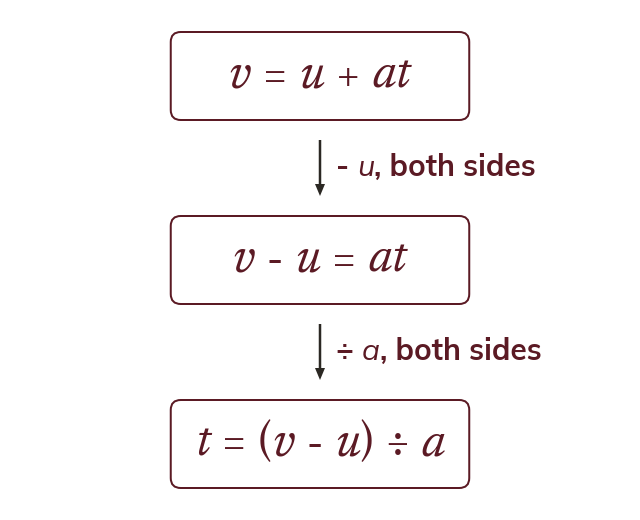
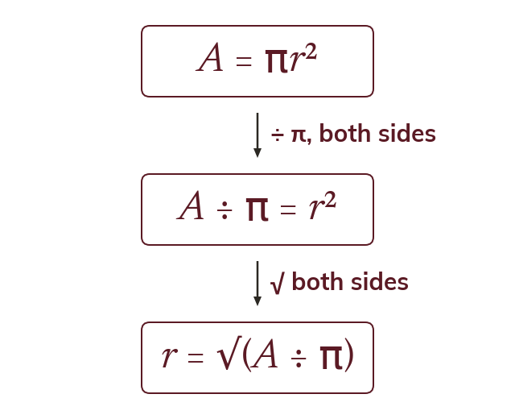

A formula is a rule with a subject
A formula connects quantities, with one of them on its own as the subject. Substituting replaces each letter by its value, then keeps to the order of operations.
Formulae run spreadsheets, sat-navs and every physics lesson. Using one means substituting into it, and sometimes turning it round to find a different quantity.
Work down the page at your own pace. Write every answer in your book first, then click to check it.
Read each card, then follow the worked examples one step at a time.

A formula connects quantities, with one of them on its own as the subject. Substituting replaces each letter by its value, then keeps to the order of operations.

A negative value is substituted inside brackets. So is not
Pick an answer. If it's wrong, the feedback tells you which mistake it was.
Read each card, then follow the worked examples one step at a time.

Changing the subject uses the same balancing moves as solving an equation. The answer is an expression, not a number.

When the new subject is squared, the square is got on its own first. Then both sides are square rooted, so from .
Pick an answer. If it's wrong, the feedback tells you which mistake it was.
Finished? Next lesson: 10.9.1 Finding the Hypotenuse.
Log in, then search for a code to practise that skill.